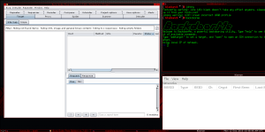

BlackArch: a distribution for pen testing
BlackArch Linux is a specialized distribution for security and forensic testing. Its simple interface and array of tools makes it suitable for the home user who wants to check the security of their router's firewall, as well as the seasoned professional hacker who has been hired to discover weaknesses in their client's computer system. At the end of August, the BlackArch team announced the release of version 2016.08.31.
BlackArch is designed specifically for penetration testing or, more colloquially, "pen testing". This involves using various tools to access a system by exploiting security holes. "Pen testing", like the term "hacking", is often misunderstood to mean criminals trying to access unauthorized information. But competent system and network administrators routinely carry out pen tests on their own systems to ensure they are safe to use, either by using a distribution like BlackArch or by authorizing a security professional to do the same. BlackArch also contains tools that go beyond simple pen-testing, including some to thwart forensic analysis or to exploit compromised systems. The distribution was initially created for the developers' own use but now is available to the public.

When it comes to pen-testing distributions, comparisons to other more established players, such as Kali or BackBox, are inevitable. But the sheer range of tools (1,532 at the time of writing) as well as the care that has gone into choosing them makes for a very favorable comparison.
According to DistroWatch, there have been three stable releases of BlackArch since 2014, released on roughly an annual basis. BlackArch is based on Arch Linux, which follows a rolling release model. This means that if BlackArch is installed on top of Arch itself, then running a system update via the package manager pacman is all that's required to get security and other updates from Arch. For tools that are not packaged for Arch directly, the system can be updated using the BlackArch repository in pacman to pick up the latest security and other updates that have been released by the team. Alternatively, users can download new versions of BlackArch whenever an ISO image is released. As BlackArch is based on Arch Linux it uses the Arch User Repository (AUR), so it can take advantage of those unofficial, user-contributed packages as well.
BlackArch was initially founded by Evan Teitelman, also known as "paraxor", who continues to develop it along with a team of developers and contributors. It boasts a number of download mirrors, most recently including Princeton University. Although the default language and keyboard layout is US English, its user base is multinational and the BlackArch Guide has been translated into French, Turkish, and Brazilian Portuguese.
BlackArch 2016.08.31 is based on the 4.7.1 kernel and comes with an updated installer as well as a number of additional tools. Tools are arranged logically according to category, such as DoS (Denial of Service), backdoor, networking, and much more. These can all be installed at once, in groups, or individually.
Tools
By default, BlackArch contains many of the most well-known security tools. This includes Nmap — a tool used for network discovery and security auditing. The program scans the network to determine which hosts and services are available, as well as which OS they are running.
The Aircrack-ng suite is preinstalled — along with Airoscript-ng and gerix-wifi-cracker, which act as GUIs for the Aircrack-ng. The tools are capable of both "sniffing" and creating packets to inject into a network in order to crack WEP/WPA wireless network keys. Another bundled application is Kismet — along with Kismon which is a GUI for it. Kismet is a network detector and packet sniffer similar to Aircrack-ng that works entirely passively. This allows Kismet to detect not only rogue wireless access points but even to analyze packets to detect wireless sniffing programs or network attacks.
No pen-testing distribution would be complete without Wireshark. The self-proclaimed "foremost network protocol analyzer" is capable of deep inspection of a number of network protocols. It can also capture data packets live for offline analysis and displays the results in a color-coded GUI.
Another vital bundled tool is the Metasploit Framework.The program is
part of the Metasploit project, which exists to provide information about
security vulnerabilities, or in its own words:
"Knowing the adversary's moves helps you better prepare your
defenses.
" The
main purpose of the tool is to develop and execute exploit code on a target
system. BlackArch comes with the free version of Burp Suite, which is an integrated
platform
for performing security testing of web applications. It does this using
various tools such as an intercepting proxy that allows an admin to inspect
and modify traffic between browsers and target applications.
Another well-known security tool that comes with BlackArch is John the Ripper, along with its GUI Johnny. This tool can autodetect password hashes and crack them. One attack mode it uses is a dictionary attack that works in conjunction with wordlists to encrypt common passwords as well as words from a dictionary, then compare them to the password hash on a target system. In addition, there's a "brute force" mode whereby the program simply tries every combination of password, although this can potentially take years. The version bundled with BlackArch is free. There is a Pro version that supports more hashes.
The latest version of BlackArch includes over 100 new tools. These include anti-XSS, a cross-site scripting (XSS) vulnerability scanner that doesn't seem to be installed by default in Kali (although Kali has XSSer). BlackArch also now includes Scamper — a handy tool for probing the internet to analyze its topology and performance. Another bundled favorite is BoNeSi — a tool to simulate botnet traffic in a test-bed environment. Another BlackArch-specific tool — introduced in 2014 — is netcon.sh, which is designed to establish network connections with the option to spoof MAC addresses, hostnames, peer IDs for BitTorrent, and so on.
Despite the vast collection of tools, care seems to have gone into those that are selected, with an emphasis on any that automate common pen-testing tasks. One example is Medusa, a massively parallel login brute-force attacker for networks that comes pre-installed in the full ISO.
The "anti-forensics" category is particularly worthy of mention. Anti-forensics is a broad term for tools and techniques to counter forensic analysis of computers. In this vein, BlackArch includes the now defunct TrueCrypt as well as its more modern successor, VeraCrypt, both of which can be used to create encrypted file containers or partitions for sensitive data. The forensic tools aesfix and aeskeyfind are included to allow scanning of memory dumps for encryption keys as part of a "cold boot attack". Provided an adversary can get to the target device in time to perform a memory dump, the attack can be used to retrieve passwords and decrypt sensitive data.
Devices or partitions encrypted by TrueCrypt or VeraCrypt have plausible deniability in that it's difficult to determine the difference between encrypted and random data. Encrypted file containers can potentially be detected quickly by TrID, which identifies files based on their binary signatures. TrueCrypt and VeraCrypt containers appear as blocks of random data with no file header. Naturally, the fact that a file has no header and contains only seemingly random data is not absolute proof that it contains encrypted information. However, there are few plausible reasons to have blocks of purely random information on a device. TrID will easily locate all such files, to allow for further analysis. Once they are located, the tool thc-keyfinder [Safe Browsing alert] can be used to measure the entropy (randomness) of a file to determine if it might contain encrypted data.
One of the more terrifying backdoor tools that is included is Backdoorme, which is similar to Joshua Pitt's The Backdoor Factory that is part of the Kali tool set. Backdoorme automates inserting key-loggers and creating new users. The software requires an active SSH connection for the time being. The Backdoor Factory is also installed and, unlike backdoorme, can be used to patch win32/64 binaries with shell code.
A full list of the tools is available from the BlackArch website. Alternatively, you can install all available tools from the BlackArch repository by using pacman.
Installation options
Like Kali, BlackArch is available as ISOs for 32-bit or 64-bit systems, though they are 4.3GB and 4.2GB in size, respectively. They weigh rather heavily against Kali's 2.6GB ISO. BlackArch redeems itself here, however, with a minimal netinstall ISO of around 400MB.
Attempting to boot in a virtual machine with both ISOs was successful, but it may be necessary to set the boot flag edd=off to ensure the "Probing EDD" message doesn't display for several minutes prior to the OS loading.
For Arch users, BlackArch can be installed on top of the existing system. One way to do this is by executing the strap.sh Bash script as root, which will add BlackArch as an unofficial user repository along with its corresponding keyring. A full version of this script is available for review on GitHub.
You can then install all BlackArch tools with a simple terminal command. BlackArch's issue tracker on GitHub has noted that sometimes running strap.sh results in an error involving an invalid keyring signature. A full discussion of the issue and a possible resolution can be found on the issue tracker itself.
Alternatively, you can retrieve the PKGBUILDs (build scripts) from GitHub and build the blackarch packages from source using the blackman package manager. More information on both install methods is available on the BlackArch downloads page.
Unlike Kali, BlackArch has yet to release ARM images with BlackArch pre-installed. Nevertheless, BlackArch supports all the ARMv6 and ARMv7 platforms listed on the Arch Linux ARM website including the Raspberry Pi. In order to install BlackArch on an ARM platform, follow the install instructions for your device on archlinuxarm.org.
For those unready to commit fully to the command line, BlackArch Version 2016.08.31 also comes with new menu entries for the various window managers available such as awesome, Fluxbox, Openbox, and spectrwm. The default is Fluxbox.
While on the subject of window managers, those used to the relatively lush GUI of Kali or BackBox Linux may find BlackArch to be rather spartan. The emphasis seems to be on listing as many tools as it can, as clearly as possible. BlackArch nevertheless has its own wallpaper and logos, namely a stylized sword running through a red Arch logo.
The team of volunteers behind BlackArch is keen to point out on the home page that the OS is relatively new when compared to other pen-testing distributions. They request that bugs be reported through the issue tracker on GitHub.
The team also asks that anyone with comments stop by the official BlackArch IRC channel [IRC] or follow BlackArch on Twitter.. BlackArch's IRC channel is particularly useful as the team has a handy bot that notifies the channel of Git commits and package updates/additions. Although a placeholder page exists, BlackArch doesn't have its own wiki at the time of writing. Any developers or translators interested in contributing should follow the steps in the BlackArch Guide before forking the repository.
Given the extremely simplified GUI and the veritable Swiss Army knife of
pre-installed tools for those willing to download the hefty ISO, the
overall impression of BlackArch is that it's a
distribution that appeals more to the white-hat hacker than to the casual
pen-tester. This said, the tools
have clearly been well-considered and are neatly categorized. Anyone
familiar with other pen-testing distributions should be able to
navigate BlackArch in minutes. GUIs for popular programs as well as a
choice of window managers make sure that this OS isn't only for lovers
of the command line. The only slight criticism would be the fact that ARM
images are still not available at the time of writing, which make setting
up such a system a
bit more tedious than for Kali.
| Index entries for this article | |
|---|---|
| Security | Distributions |
| GuestArticles | Drake, Nate |